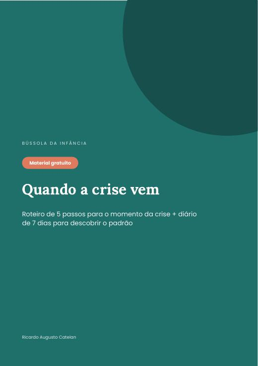

Roteiro de 5 passos para o momento da crise e diário de 7 dias para descobrir o padrão das crises do seu filho.
Baixar grátis (PDF)
Sem cadastro. PDF de 6 páginas para imprimir ou usar no celular.

Ver todos os guias da coleção